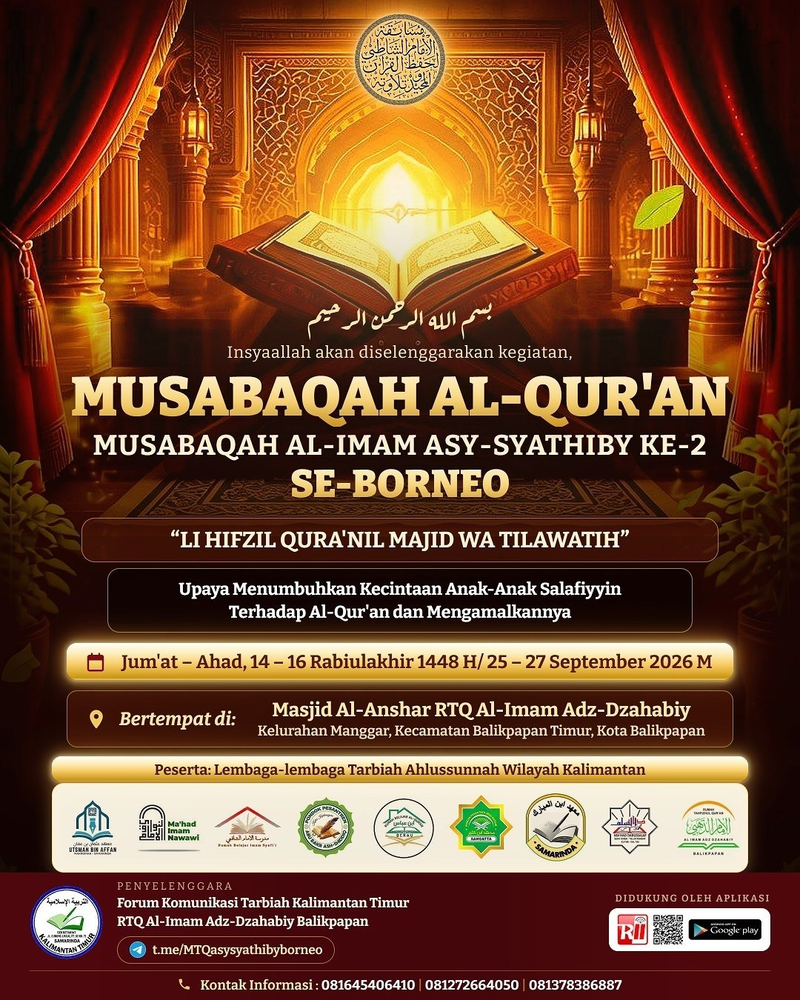
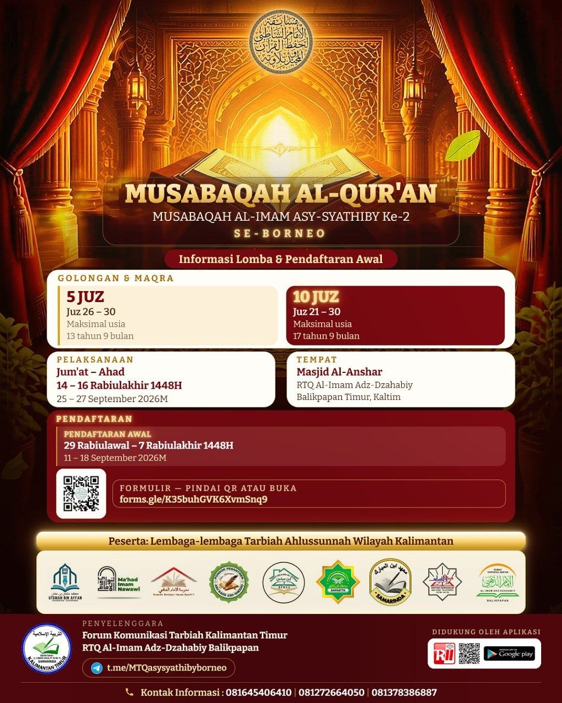
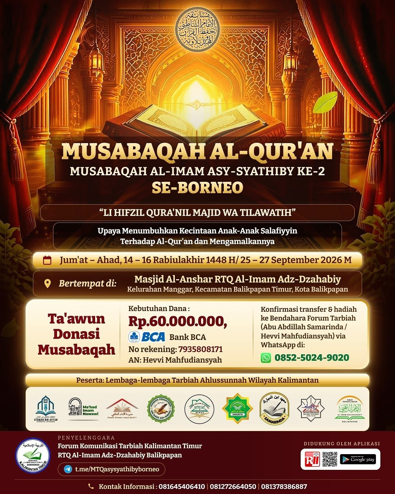

Insyaallah dilaksanakan pada 5-7 Jumadil Awal 1448 H / 16-18 Oktober 2026 di Masjid Al-Anshar RTQ Al-Imam Adz-Dzahabiy, Balikpapan.
بسم الله الرحمن الرحيم
Dengan memohon pertolongan Allah ﷻ, kami menyampaikan bahwa Musabaqah Al-Imam Asy-Syathiby Ke-2 Se-Borneo ditunda pelaksanaannya hingga 16–18 Oktober 2026.
Penundaan ini dilakukan dengan mempertimbangkan beberapa hal, di antaranya kondisi cuaca di sebagian daerah yang masih terdampak asap kebakaran hutan dan lahan (karhutla) serta ketersediaan dana kegiatan yang hingga saat ini belum mencukupi untuk menunjang seluruh kebutuhan pelaksanaan secara optimal.
Keputusan ini bukanlah karena berkurangnya semangat kita dalam menyemarakkan Al-Qur’an. Sebaliknya, penundaan ini merupakan bagian dari ikhtiar agar musabaqah dapat terlaksana dengan baik, tertib, aman, dan penuh tanggung jawab.
Kami memohon maaf atas perubahan jadwal ini dan sangat mengharapkan doa serta dukungan dari seluruh pihak. Semoga Allah ﷻ membuka jalan, mencukupkan segala kebutuhan kegiatan, serta mempertemukan kita kembali dalam sebuah majelis yang penuh keberkahan.
Mari bersama-sama mengambil bagian dalam perjuangan menanamkan kecintaan terhadap Al-Qur’an kepada generasi kita.
Jazakumullahu khairan katsiran atas doa, pengertian, dan dukungan yang telah diberikan.
والله الموفق إلى سواء السبيل

Kegiatan ini mengangkat tema “Li Hifzil Qur'anil Majid wa Tilawatih” , sebagai upaya menumbuhkan kecintaan anak-anak kaum muslimin terhadap Al-Qur'an dan mengamalkannya.
Musabaqah ini membuka kategori Golongan dan Maqra 5 Juz serta 10 Juz .

Dalam rangka mendukung kelancaran penyelenggaraan Musabaqah Al-Qur'an Al-Imam Asy-Syathiby ke-2 Se-Borneo, panitia juga membuka kesempatan bagi kaum muslimin untuk turut berpartisipasi melalui ta'awun dan donasi.
Adapun kebutuhan dana penyelenggaraan yang tercantum dalam informasi kegiatan adalah sebesar Rp60.000.000,-.
Bagi yang ingin berpartisipasi dalam mendukung kegiatan ini, donasi dapat disalurkan melalui:
Untuk konfirmasi transfer dan informasi lebih lanjut, dapat menghubungi bendahara Forum Tarbiah melalui WhatsApp: 0852-5024-9020.
